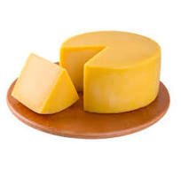

<!doctype html>
<html lang="pt-br">
  <head>
    <meta charset="utf-8">
    <meta name="viewport" content="width=device-width, initial-scale=1.0>
      <title>queijos 1</title>
  </head>
      <body>
    
    <h1>QUEIJO</h1>
    <p>Existem milhares de tipos de queijos produzidos em todo o mundo. Diferentes estilos e sabores de queijo são o resultado do uso do leite de diferentes mamíferos ou do acréscimo de diferentes teores de gordura, empregando determinadas espécies de bactérias e bolores, e variando o tempo de envelhecimento e outros tratamentos de transformação. Outros fatores incluem a dieta animal e a adição de agentes aromatizantes tais como ervas, especiarias, ou defumação. A condição de pasteurização do leite pode também afetar o sabor final. O amarelo e o vermelho usados para colorir muitos queijos são o resultado da adição de colorau.[desambiguação necessária] Os queijos são consumidos puros ou como ingrediente de pratos diversos. A maioria dos queijos derretem ao serem aquecidos.</p>
  </body>
  </html>
